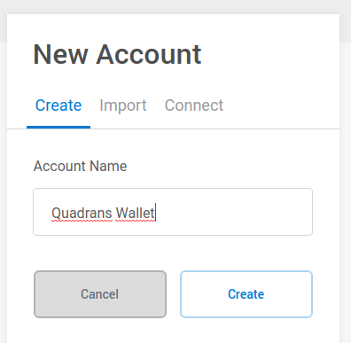
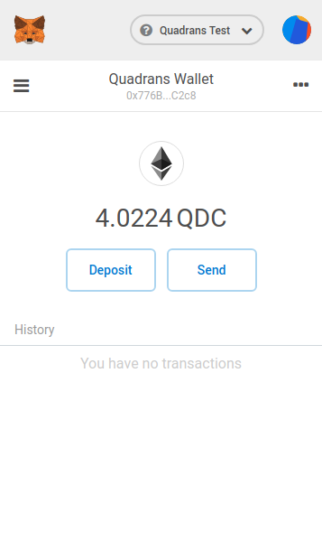
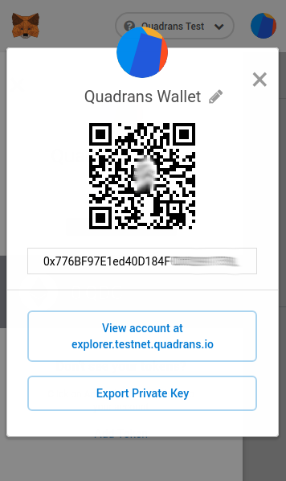
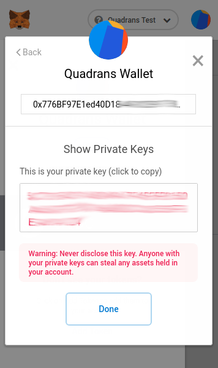
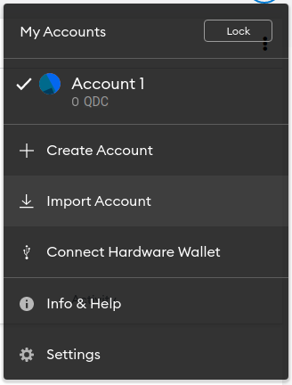
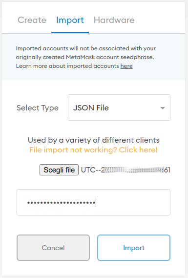

MetaMask is a browser plugin that allows users to manage wallets and make transations. MetaMask can be used for Quadrans Coin.
It is availble for Google Chrome, Mozilla Firefox and Opera web browsers.
MetaMask extension for your browser:
Get MetaMask for Google Chrome
Get MetaMask for Mozilla Firefox
Get MetaMask for Opera browser
To manage Quadrans Coins users must create a new Network configuration in MetaMask.
Go to Account menu, click on Settings and on Networks, select Add Network and add the following information:
Network Name: Quadrans
New RPC URL: https://rpc.quadrans.io
ChainID: 10946
Symbol: QDC
Block Explorer URL: https://explorer.quadrans.io
Click Save to confirm.
To manage a Quadrans Wallet in testnet users must add a secondary Network configuration in MetaMask.
Network Name: Quadrans Test
New RPC URL: https://rpctest.quadrans.io
ChainID: 10947
Block Explorer URL: https://explorer.testnet.quadrans.io
Attention: If you intend to install a Quadrans node please ignore this step: your node will ask to create a new wallet during the installation process and if you want to transfer your Quadrans Coin please follow the Import your Quadrans node wallet step.
It’s important to understand that the first wallet created in MetaMask is compatible only with Ethereum blockchain.
After you added Quadrans Mainnet or Testnet network select one and click on the icon on the top right of MetaMask interface, in the new menu press Create Account.
The New Account window will appear. Give a name to your new wallet, click Create
Quadrans wallets for Mainnet or Testnet are usable in both networks. Simply change the network to see the two balances.

Click on the menu button below the MetaMask fox icon and click on Details.
  
In the new window click on Export Private Key, when asked insert your MetaMask password and copy the private key in a safe place.
After you added Quadrans Mainnet or Testnet network select one and click on the icon on the top right of MetaMask interface, in the new menu press Import Account.

The Import Account window will appear. Select JSON File as Type ad choose your UTC-* file of your wallet from your backup, type the password and press Import.
